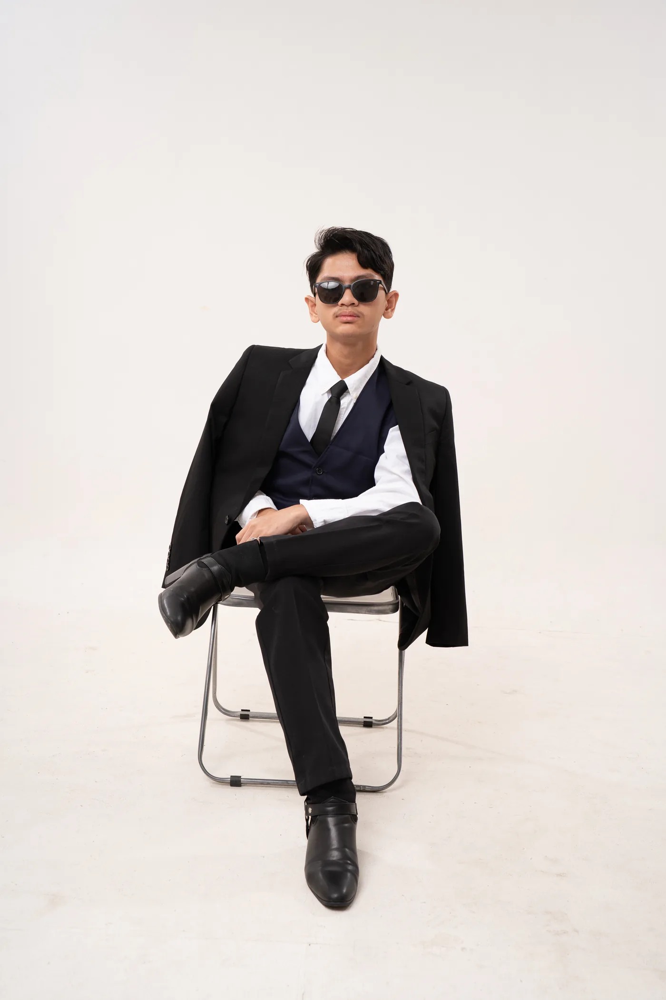

Leadership • Integrity • Service • Excellence • Unity • Responsibility
PSS Auditor
Political Science Society
Jedrick P. Salomon
Upholding trust through careful stewardship, transparent service, and responsible leadership.
Birthday
August 2, 2005
Zodiac Sign
Leo
Year Level
Third Year
Motto
“Quietly making an impact.”
Advocacy Focus
- Civic Education and Political Awareness
- Good Governance and Accountability
- Digital Innovation in Student Leadership
- Democratic Participation and Youth Empowerment
- Human Rights and Social Justice
Roles and Responsibilities
- Monitor the organization's finances.
- Review financial records and receipts.
- Ensure proper use of organizational funds.
- Assist in preparing financial reports.
- Promote transparency and accountability.
Favorite Political Quote
“Justice delayed is justice denied.”— William E. Gladstone